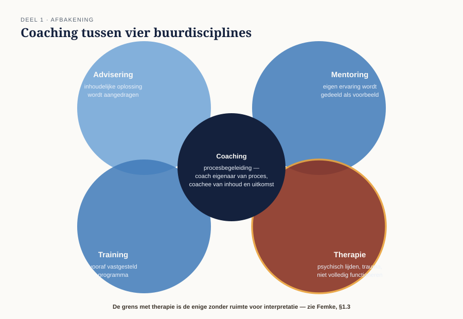
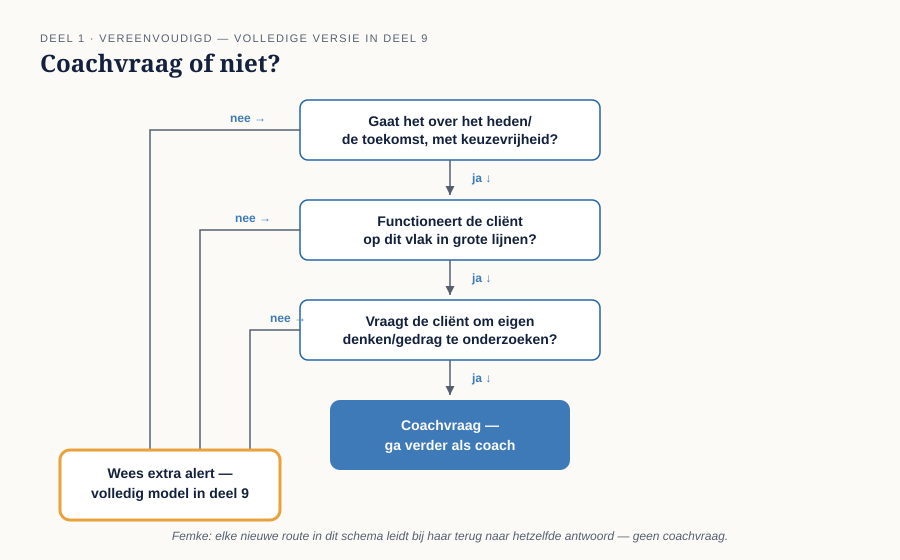

Cursus Coachen · Niveau 1 (NOBCO/EMCC EIA Foundation · ICF Level 1) · Deel 1 van 30
Wat is coaching?
Voordat er één gesprekstechniek wordt aangeleerd, legt dit deel vast wat coaching wél en vooral wat het niet is. U bakent coaching af tegenover advisering, mentoring en training, oefent de grens die geen ruimte voor interpretatie kent — die met therapie — en maakt kennis met de twee certificeringslijnen die door de hele cursus naast elkaar blijven staan: NOBCO/EMCC EIA en ICF.
6secties
±3uleestijd + werkboek
5controlevragen
2certificeringslijnen
Positionering. Deze cursus bereidt voor op twee routes tegelijk — het EMCC Competence Framework (NOBCO/EMCC EIA) en de ICF Core Competencies — en vervangt geen van beide officiële trajecten. Studeer voor een accreditatie of credential altijd óók het bronmateriaal van NOBCO/EMCC of ICF zelf.
Niveau 1: ➊ Wat is coaching? (hier) → ➋ Houding en aanwezigheid → ➌ Contracteren → ➍ Luisteren → ➎ Vragen stellen → ➏ Doel en focus → ➐ Reflecteren en spiegelen → ➑ Sessieopbouw en afronding → ➒ Ethiek en grenzen (basis) → ➓ Synthese
01
Waarom dit deel eerst
⏱ 15 min
Voordat u een gesprekstechniek leert, moet u weten wat u aan het doen bent — en vooral wat niet. Coaching wordt in de praktijk voortdurend verward met advisering, therapie, mentoring en training. Die verwarring is niet onschuldig: ze bepaalt wat een coach wel en niet mag doen, en waar de grens ligt die u nooit uit het oog mag verliezen. Dit deel legt die grenzen vast, voordat er één techniek is aangeleerd.
Aan het eind van dit deel kunt u:
in eigen woorden een werkdefinitie van coaching geven, met proceseigenaarschap bij de coach en inhouds- en uitkomsteigenaarschap bij de coachee;
coaching afbakenen tegenover advisering, mentoring, training en therapie, met de grens naar therapie als de belangrijkste;
de twee certificeringslijnen — NOBCO/EMCC EIA en ICF — naast elkaar plaatsen zonder er één als hoofdlijn te behandelen;
het drieluik claim → status → waarde toepassen op een willekeurig model, als grondhouding voor de rest van de cursus.
02
Een werkdefinitie van coaching
⏱ 15 min
Coaching is een gestructureerd, doelgericht gesprek waarin de coach de coachee helpt zijn eigen denken, gedrag en handelen te onderzoeken en te ontwikkelen — zonder de inhoud van de oplossing aan te dragen. De coach is proceseigenaar, de coachee is eigenaar van de inhoud én van de uitkomst.
Drie elementen zitten in vrijwel elke gangbare definitie:
Gelijkwaardigheid — de coach staat niet boven de coachee als expert-op-de-inhoud.
Eigenaarschap bij de coachee — de coachee formuleert het doel en de oplossing, niet de coach.
Gerichtheid op ontwikkeling, niet op het overnemen van een taak.
03
Afbakening — vier buurdisciplines
⏱ 35 min

Figuur 1-1 — coaching tussen vier buurdisciplines, met overlappende én unieke kenmerken
Coaching versus advisering
Een adviseur brengt inhoudelijke expertise in en draagt een oplossing aan. Een coach draagt geen oplossing aan, ook niet als hij die zou weten. Het verschil zit niet in kennis van het onderwerp, maar in de keuze om die kennis buiten de sessie te houden. Een coach met verstand van organisatieverandering die tijdens een sessie "je zou het zo moeten aanpakken" zegt, is op dat moment geen coach meer.
Coaching versus mentoring
Een mentor deelt eigen ervaring uit een vergelijkbare rol of loopbaan ("toen ik dat meemaakte, deed ik…"). Een coach deelt in principe geen eigen ervaring als sturend element. De grens is vloeiend in de praktijk — veel professionals combineren beide rollen — maar de cursus behandelt ze bewust apart, omdat het vermengen ervan zonder het te weten de meest voorkomende beginnersfout is.
Coaching versus training
Training draagt vaardigheden of kennis over volgens een vooraf bepaald programma. Coaching heeft geen vooraf vastgestelde inhoud — de agenda ontstaat in en met de coachee. Een coach kan best een oefening of model aanreiken (zie het drieluik claim→status→waarde, sectie 5), maar niet als doel op zich.
Coaching versus therapie — de belangrijkste grens
Dit is de grens die door de hele cursus terugkomt, en de enige waar geen ruimte voor interpretatie is. Coaching werkt met het heden en de toekomst, met een functionerende cliënt en met vraagstukken binnen het bereik van bewuste keuzevrijheid. Therapie behandelt psychisch lijden, trauma en stoornissen, vaak met het verleden als aangrijpingspunt, bij een cliënt die (tijdelijk) niet volledig functioneert op het vlak waar de hulp nodig is.
Het onderscheid is niet altijd scherp te trekken aan de hand van het onderwerp alleen — "ik zit niet lekker in mijn vel" kan bij twee verschillende mensen een heel ander gewicht hebben. Daarom werkt deze cursus met een casuspersoon, Femke, die dat gewicht demonstreert: haar vraag klínkt als een coachvraag, maar is het bij nadere intake niet.
Femke wordt in geen enkel deel van deze cursus gecoacht
Dat is een bewuste, structurele keuze, geen incident. Zie het casusdossier voor haar achtergrond en de volledige doorverwijsprocedure in deel 9. Bij elke nieuwe methodiek die u later leert, keert de vraag terug "zou u dit bij Femke inzetten?" — en het antwoord is en blijft nee.

Figuur 1-2 — beslisschema "coachvraag of niet" (vereenvoudigde versie; volledige versie in deel 9)
Controlevragen
Uit Werkboek deel 1, Opdracht 1.2 — vier situaties beoordeeld
aEen teamleider vraagt een collega: "Ik zie dat jij dit soort gesprekken goed voert — hoe pak jij dat aan?" en luistert naar het antwoord om het over te nemen. Coaching of een buurdiscipline?Toon antwoord
Mentoring. Ervaring wordt overgedragen als voorbeeld om over te nemen — niet onderzocht, maar gekopieerd.
bIemand vraagt een expert: "Wat is volgens jou de beste manier om dit conflict op te lossen?" en krijgt een concreet advies. Coaching of een buurdiscipline?Toon antwoord
Advisering. Er wordt een inhoudelijke oplossing aangedragen.
cEen coach vraagt: "Wat heb je zelf al geprobeerd, en wat zou je willen dat er anders was?" — zonder een antwoord te suggereren. Coaching of een buurdiscipline?Toon antwoord
Coaching. Geen inhoud aangedragen, eigenaarschap blijft bij de ander.
dIemand meldt zich met de vraag "ik ben al maanden somber en kom mijn bed niet uit" bij een coach. Coaching of een buurdiscipline?Toon antwoord
Grensgeval richting therapie. Signalen van mogelijk disfunctioneren (bed niet uitkomen, langdurige somberheid) zijn reden voor een zorgvuldige intake, niet voor direct beginnen met coachen. Dit is precies het soort signaal waar Femke voor staat.
Controlevraag
Uit Werkboek deel 1, Opdracht 1.3 — Femke, eerste kennismaking
1Wat maakt dat Femkes vraag op het eerste gezicht op een coachvraag lijkt, en welk signaal geeft reden om extra alert te zijn?Toon antwoord
Femkes vraag is verpakt als een gewone ontwikkelvraag ("ik zit vast") — de formulering zelf verraadt niets bijzonders. Wat alert maakt, is niet het onderwerp maar het gewicht ervan bij nadere intake: signalen van duur, ernst en functioneren die erop wijzen dat dit buiten het bereik van bewuste keuzevrijheid valt. Op dit punt in de cursus heeft u nog geen volledig intakemodel (dat komt in deel 9) — het gaat hier om een eerste, intuïtieve alertheid, niet om een diagnose. Speculeren over wat er met Femke aan de hand zou zijn, is precies het gedrag dat de cursus wil voorkomen; de juiste vraag is niet "wat heeft zij?" maar "wat maakt dat ík hier alert van word?"
04
Het beroepsveld in Nederland
⏱ 20 min
Coach is in Nederland geen beschermde titel. Iedereen mag zich coach noemen. Dat maakt twee dingen belangrijk: ten eerste kwaliteitsonderscheid via vrijwillige certificering, ten tweede een expliciet ethisch kader dat niet van buitenaf wordt afgedwongen maar door de coach zelf wordt gedragen (zie deel 9 en deel 23-24).
Twee internationale kwaliteitskaders zijn in Nederland allebei relevant en worden in deze cursus naast elkaar gelegd, niet na elkaar behandeld.
Vier niveaus: Foundation, Practitioner, Senior Practitioner, Master Practitioner. Foundation staat voor een coachende gespreksstijl binnen een andere professionele rol (leidinggevende, adviseur); vanaf Practitioner-niveau begeleidt u zelfstandig een coachtraject van intake tot afronding. Getoetst aan het EMCC Competence Framework (acht hoofdcompetenties). EIA is het in de Benelux meest herkende keurmerk en sluit aan bij opleidingen met een EQA-erkenning.
ICF (International Coaching Federation)
Werkt met opleidingsniveaus (Level 1 en Level 2, aangeboden door geaccrediteerde opleiders) die toeleiden naar credentials: ACC (Associate Certified Coach), PCC (Professional Certified Coach) en MCC (Master Certified Coach). Een Level 1-opleiding bereidt voor op ACC, een Level 2-opleiding op PCC. Naast opleidingsuren gelden eisen aan gedocumenteerde coachuren, mentorcoaching en een prestatie-evaluatie. ICF is wereldwijd het meest verspreide keurmerk en dominant bij internationale opdrachtgevers.
Deze cursus positioneert zich als voorbereiding op beide routes, niet als vervanging van het officiële certificeringstraject van een van beide organisaties — een eigen leerlijn, geen ICF- of NOBCO-erkend diploma.
Cursusniveau
NOBCO/EMCC EIA
ICF
Niveau 1 (deel 1-10)
Foundation-oriëntatie
Begin Level 1/2-traject
Niveau 2 (deel 11-22)
Practitioner
Level 2 / toewerken naar PCC
Niveau 3 (deel 23-30)
Senior Practitioner
Blik richting PCC/MCC
Figuur 1-3 — EIA-niveaus naast ICF-credentials, met bijbehorend cursusniveau (als tabel: de inhoud is een directe koppeling van rijen, geen illustratie).
Geen van beide is de hoofdlijn
Cursisten met een organisatieachtergrond kennen soms ICF beter (internationaal, bekend via multinationals); cursisten die via een Nederlandse coachopleiding instromen kennen NOBCO/EIA beter. De keuze tussen beide hangt af van uw beoogde doelgroep, niet van kwaliteit — deze cursus behandelt ze daarom bewust als twee gelijkwaardige lijnen.
05
Het drieluik: claim → status → waarde
⏱ 15 min
Door de hele cursus heen introduceren we modellen, instrumenten en frameworks (GROW, TA, RET, schaalvragen, en later ook persoonlijkheidsinstrumenten). Om te voorkomen dat een model als "waarheid" wordt gepresenteerd, hanteren we steeds dezelfde drie stappen.
Het stramien
1. Claim — wat beweert dit model of instrument letterlijk? 2. Status — wat is de wetenschappelijke of professionele status van die claim: consensus, gedeeltelijk onderbouwd, omstreden, of puur praktisch bruikbaar zonder bewijsclaim? 3. Waarde — wat kunt u er, gegeven die status, verantwoord mee in een sessie?
Een voorbeeld ter illustratie, buiten het coachvakgebied zelf: leerstijlen van Kolb. Claim — mensen hebben een voorkeursleerstijl. Status — wetenschappelijk omstreden als voorspeller van leereffectiviteit. Waarde — bruikbaar als reflectie-instrument, niet als voorschrijvend model.
Deze structuur komt voor het eerst concreet aan bod in deel 6 (GROW), maar wordt hier al geïntroduceerd omdat het een grondhouding is, geen technisch trucje.
06
Samenvatting
⏱ 10 min
Coaching onderscheidt zich van advisering, mentoring en training door proceseigenaarschap bij de coach en inhouds- en uitkomsteigenaarschap bij de coachee.
De grens met therapie is de belangrijkste en minst onderhandelbare grens in dit vak — Femke is daarvan het vaste ijkpunt door de hele cursus.
"Coach" is in Nederland geen beschermde titel; kwaliteitsborging loopt via vrijwillige certificering (EIA/NOBCO en ICF), die deze cursus als twee gelijkwaardige lijnen naast elkaar behandelt.
Elk model dat u later leert, toetst u aan claim → status → waarde.
Vast anker — bewaar uw antwoord
Werkboek Opdracht 1.1 (zelfbeeldschaal): op een schaal van 1-10, hoe coachend werkt u nu al, in welke rol dan ook? Waarop baseert u dat cijfer, en wat zou één punt hoger zichtbaar anders maken? U komt op dit antwoord terug in deel 10 (afsluiting niveau 1) en deel 30 (capstone), om uw eigen ontwikkeling zichtbaar te maken.
Verder naar deel 2
Deel 2 werkt de grondhouding uit die aan elke techniek voorafgaat: waar uw aandacht is, en hoe u uw eigen reactie opmerkt voordat die het gesprek stuurt.